The Universal Code
Exploring the hidden logic and overlooked systems of everyday life, from the perspective of an engineer.
It's not activism. It's not theory. It's engineering.
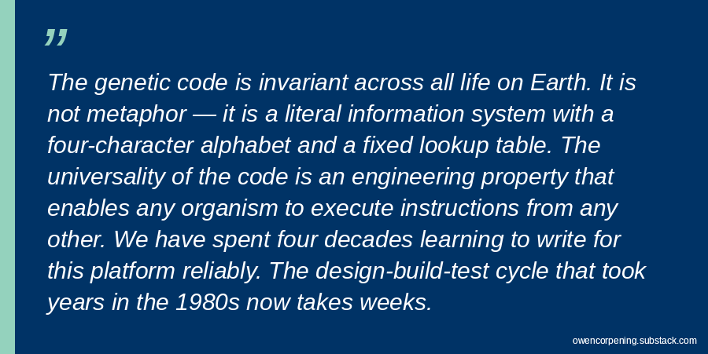
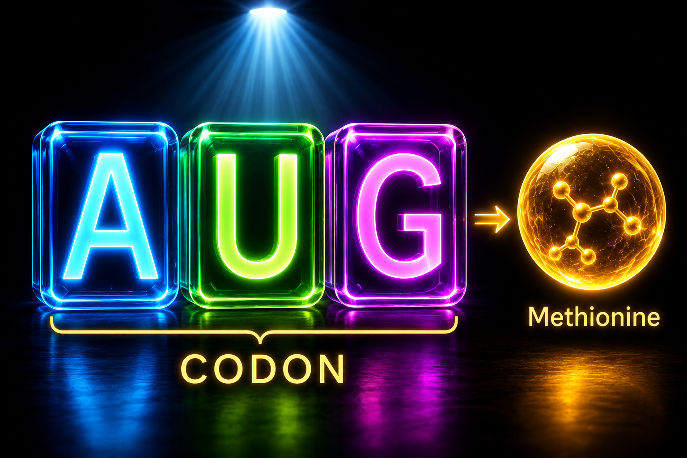
Sixty-four codons. Twenty amino acids. One code. Every living thing on Earth runs on the same operating system.
That is not a metaphor. The machinery of heredity is a literal information system — a code with an alphabet of four characters, three-character words, twenty defined outputs, and three stop signals. It was reverse-engineered from living cells in the 1960s. It turned out to be universal. And the universality is the engineering property that changes everything.
(For the distinction between how these concepts differ in scope and application, see my essay The Difference Between a Genome and DNA.)
The Code
DNA is a polymer — a long chain of four nucleotide bases: adenine, thymine, guanine, cytosine. They pair in predictable ways — A to T, G to C — along a double helix. The sequence of bases encodes information. The unit of information is the codon: three consecutive bases read as a group.
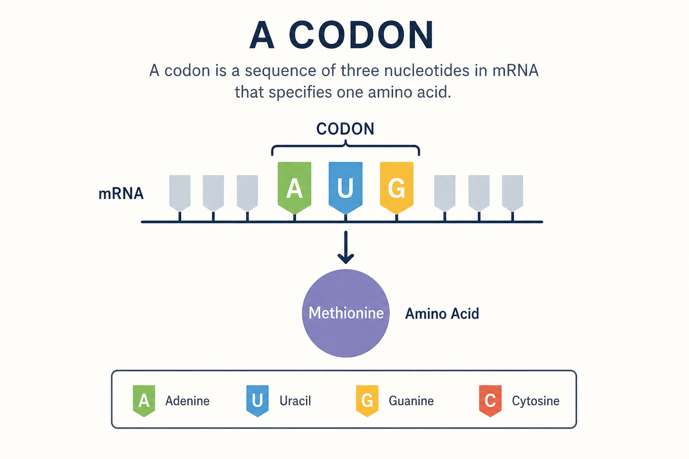
Four bases. Three-base codons. That gives 4³ = 64 possible codons. Sixty-one of them specify one of the twenty canonical amino acids. Three are stop signals — terminators that tell the ribosome the protein is complete. Some amino acids are specified by multiple codons; none are left unassigned.
The result is a lookup table that maps any three-base sequence to either an amino acid or a stop. The table fits on a single page. It was the central unsolved problem of molecular biology from 1953 to 1966.
The Machinery
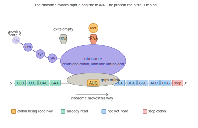
The code doesn't execute itself. Two classes of molecular machines do the work.
The first is the polymerase. When a gene needs to be expressed, an RNA polymerase binds to the DNA strand and walks it, synthesizing a complementary messenger RNA copy as it goes. The mRNA is a working copy — a transcript — that carries the gene sequence out of the nucleus to the cytoplasm.
The second machine is the ribosome. It binds the mRNA and reads the codons three at a time. For each codon, a transfer RNA molecule delivers the corresponding amino acid. The ribosome catalyzes the peptide bond, extends the chain, and advances to the next codon. When it hits a stop codon, it releases the finished protein.
The protein then folds — driven by the chemistry of its amino acid sequence — into a three-dimensional structure that determines its function. The fold is the function. The sequence determines the fold. The code determines the sequence.
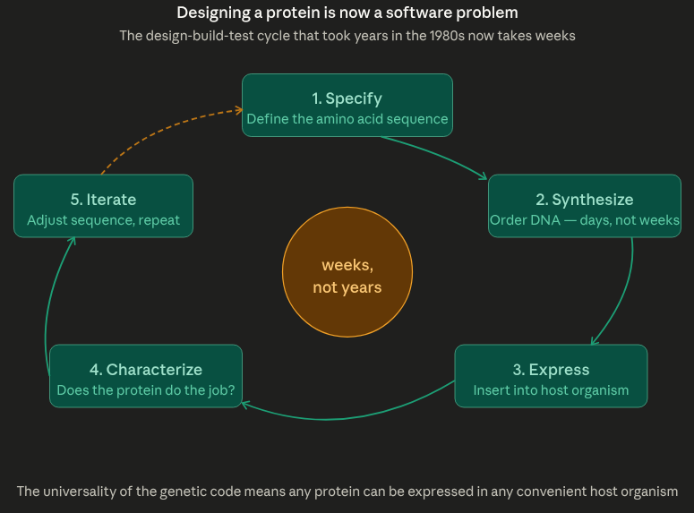
This process — DNA to RNA to protein — is the central dogma of molecular biology, named by Francis Crick in 1958. Not a hypothesis. The most-verified mechanistic description in all of biology.
The Universal Discovery
The genetic code was cracked between 1961 and 1966, primarily by Marshall Nirenberg, Har Gobind Khorana, and Robert Holley. They worked out the full codon table — which three-base sequence maps to which amino acid — in bacteria. Nirenberg, Holley, and Khorana shared the Nobel Prize in 1968.
What they found — and what took time to fully absorb — was that the code is essentially the same in every organism examined.
The codon that specifies leucine in E. coli specifies leucine in yeast, in a fern, in a whale, in you. The stop codon that halts translation in bacteria halts it in human cells. There are minor exceptions at the edges — some mitochondrial genomes use slightly different mappings for a handful of codons, a few unusual organisms deviate at one or two positions — but the core genetic code is invariant across all known life.
The probability of this being coincidence is statistically negligible. The codon table has 64 positions mapping to 20 amino acids plus three stops. The number of possible tables is immense. The probability that any two independently evolved codes would match exactly is effectively zero. The universality of the code is evidence of common descent from a single ancestor — and it is the engineering property that makes synthetic biology possible.
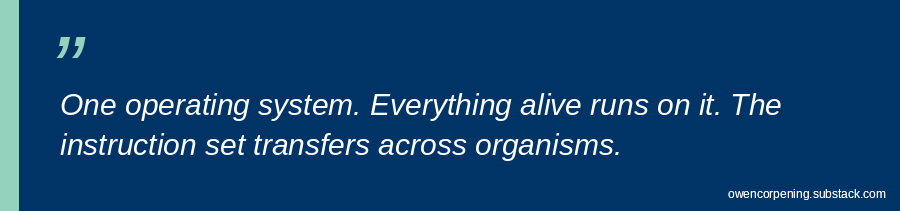
Humulin, 1982
Before 1982, insulin-dependent diabetics received insulin extracted from pig and cow pancreata. The molecular structure was close enough to human insulin to manage blood glucose — close enough to keep people alive — but it triggered immune reactions in some patients and required industrial-scale processing of slaughterhouse byproduct to produce.
In 1982 the FDA approved Humulin: human insulin produced by genetically engineered E. coli. Genentech had taken the human insulin gene, inserted it into bacteria, and the bacteria made human insulin. Not pig insulin. Human insulin, identical to what the pancreas produces, synthesized in a fermentation tank.
This worked because the genetic code is universal. E. coli does not know or care that the insulin gene originated in a human genome. The polymerase copies the DNA. The ribosome reads the codons. The machinery executes the instructions. The source of the instructions is irrelevant to the machine.
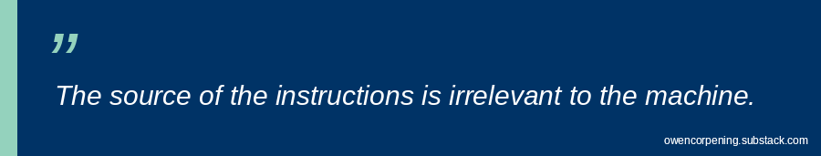
Humulin was the proof of concept. The first demonstration that universality could be exploited industrially. The first time a human gene ran in a foreign organism and produced a clinically useful product at scale.
What Followed
The timeline accelerated quickly after 1982.

Human growth hormone followed insulin — previously extracted from cadaver pituitaries, now produced by engineered bacteria. Erythropoietin came next, produced in Chinese hamster ovary cells rather than extracted from urine. The hepatitis B vaccine shifted from plasma-derived to an engineered version.
Factor VIII for hemophilia moved from pooled blood products — which had caused devastating HIV transmission — to engineered cell lines.
The cheesemaking industry is a useful illustration of how quietly synthetic biology enters daily life. Traditional rennet, used to curdle milk, comes from the stomach lining of young calves. In 1990, the FDA approved fermentation-produced chymosin — the calf enzyme gene expressed in yeast — as a rennet substitute. Today, approximately 80 percent of cheese sold in the United States is made with fermentation-produced chymosin. If you have eaten cheese recently, you have eaten a product of synthetic biology.
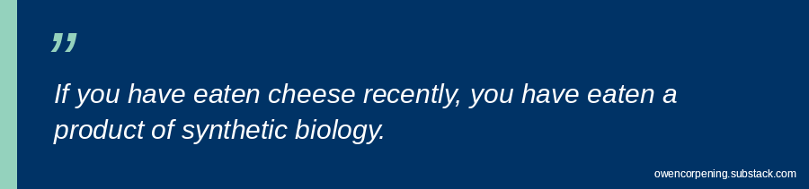
The monoclonal antibody revolution built on the same foundation. Every biologic drug — Humira, Keytruda, Herceptin, the long list of checkpoint inhibitors now reshaping oncology — is a protein produced by engineered cells running human or humanized gene sequences. The global monoclonal antibody market reached approximately $230 billion in 2023. It is entirely a synthetic biology industry.
The mRNA vaccines deployed for COVID-19 in 2020 demonstrated a different mode. Rather than producing a protein in a bioreactor and injecting it, Moderna and Pfizer injected the instructions directly — mRNA encoding the SARS-CoV-2 spike protein — and let the patient's own ribosomes do the translation. The code ran in human cells. The ribosome, same molecular machine as always, read the codons and made the protein. The delivery mechanism was new. The underlying machinery was four billion years old.
Where It Goes
Synthetic biology is now a platform, not a set of specific products.
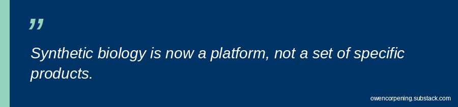
The tools have matured to the point where designing a protein is largely a software problem. Specify the amino acid sequence you want. The codon table tells you the DNA sequence that encodes it. Synthesize the DNA — a routine commercial service. Express it in a convenient host organism. Characterize the result. Iterate.
The design-build-test cycle that took years in the 1980s now takes weeks. Companies are engineering enzymes to catalyze industrial chemical reactions that currently require harsh solvents and high temperatures. Microbes are being programmed to produce materials, fuels, and flavors. Cells are being designed to function as therapeutic agents — sensing disease states and releasing targeted responses. Agricultural applications are in production.
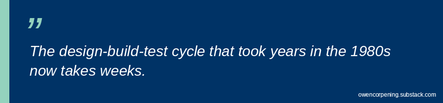
The universality of the code means any protein that can be specified can be expressed in any convenient host. The instruction set is portable. The manufacturing platform is any organism that can be kept alive in a fermentor.
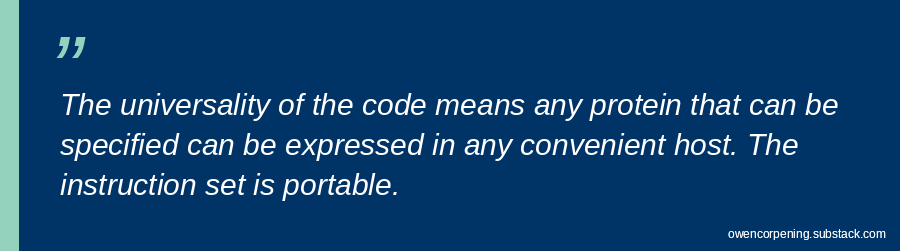
The question for the next decade is not whether programmable biology is real — it has been producing medicines for forty years. The question is how fast the design cycle compresses and which problems become tractable first as it does.
Watson and Crick described the double helix in 1953. Nirenberg cracked the first codons in 1961. Humulin shipped in 1982. The code was always there. It took three decades after its discovery to learn to write for it reliably. We are now writing. The revision cycle is getting faster every year.
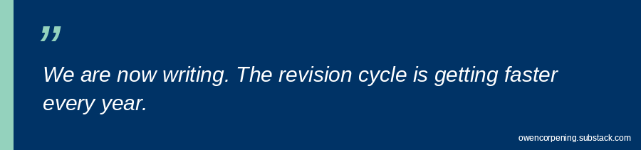
Sources
The genetic code — discovery Nirenberg, M.W. and Matthaei, J.H. (1961). "The dependence of cell-free protein synthesis in E. coli upon naturally occurring or synthetic polyribonucleotides." Proceedings of the National Academy of Sciences. 47(10):1588–1602.
Crick, F.H.C. (1958). "On Protein Synthesis." Symposia of the Society for Experimental Biology. 12:138–163. (Original central dogma statement.)
Nobel Prize in Physiology or Medicine 1968 — Nirenberg, Holley, Khorana. nobelprize.org
Universality of the code Koonin, E.V. and Novozhilov, A.S. (2009). "Origin and Evolution of the Genetic Code: The Universal Enigma." IUBMB Life. 61(2):99–111.
Humulin Johnson, I.S. (1983). "Human Insulin from Recombinant DNA Technology." Science. 219(4585):632–637. FDA approval: 1982.
Chymosin Flamm, E.L. (1991). "How FDA Approved Chymosin: A Case History." Bio/Technology. 9:349–351. Current U.S. market share ~80%.
mRNA vaccines Baden, L.R. et al. (2020). "Efficacy and Safety of the mRNA-1273 SARS-CoV-2 Vaccine." New England Journal of Medicine. 384:403–416.
Monoclonal antibody market Grand View Research: global monoclonal antibody market 2023 — approximately $230 billion. grandviewresearch.com
This piece is part of Owen's Applied Thinking — standalone series. The diagnostic and clinical applications of molecular biology are covered in the Diagnostic Doctrine series.
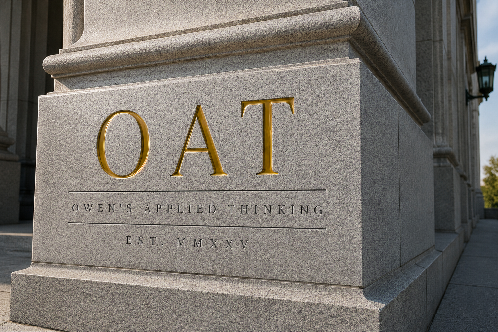
Subscribe free — no credit card required. Owen's Applied Thinking is completely free to read and share.
Owen's Applied Thinking — owencorpening.substack.com
Owen Corpening — Owen's Applied Thinking owencorpening.substack.com
I held a Texas PE license and chose not to renew it after I left engineering practice. Nothing published here constitutes professional engineering services. These are conceptual analyses and preliminary estimates intended for discussion. Political and cultural opinions are mine alone. If you are actually building something, hire a licensed engineer in your jurisdiction.